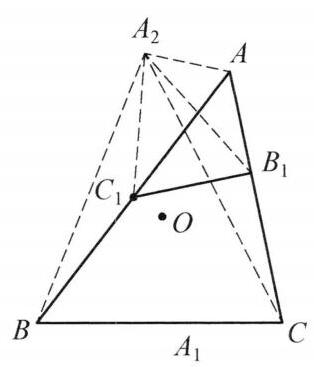
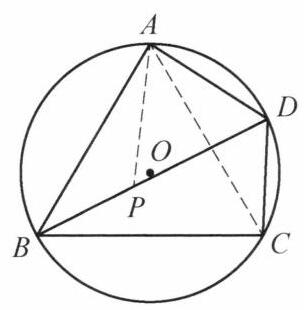

14 例 5：双重三角形局部相似到整体相似
14.1 题目
设 {A}_1,{B}_1,{C}_1 分别是 \triangle {ABC} 的边 {BC},{CA},{AB} 上的点， \triangle A{B}_1{C}_1 ， \triangle {A}_{1}B{C}_1 和 \triangle {A}_1{B}_{1}C 的外接圆分别与 \triangle {ABC} 的外接圆交于另一点 {A}_2,{B}_2 , {C}_2\left( {{A}_2 \neq A,{B}_2 \neq B,{C}_2 \neq C}\right) ,点 {A}_3,{B}_3 和 {C}_3 分别是 {A}_1,{B}_1,{C}_1 关于边 {BC} , {CA},{AB} 的中点的对称点. 证明: \triangle {A}_2{B}_2{C}_2 \backsim \triangle {A}_3{B}_3{C}_3 .

图 2-4
14.2 参考解答
如图 2-4,设 \triangle {ABC} 的外接圆圆心为 O ,连接 {A}_{2}A,{A}_2{B}_1,{A}_{2}C,{A}_{2}B,{A}_2{C}_1 . 因为
\angle {C}_1{A}_2{B}_1 = \angle {BAC} = \angle B{A}_{2}C,
\angle {A}_2{B}_1{C}_1 = \angle {A}_{2}A{C}_1 = \angle {A}_2{CB},
所以 \triangle {B}_1{A}_2{C}_1 \backsim \triangle C{A}_{2}B ,于是,
\frac{{B}_1{A}_2}{C{A}_2} = \frac{{A}_2{C}_1}{{A}_{2}B} = \frac{{B}_1{C}_1}{CB}.
①
对四边形 A{B}_1{C}_1{A}_2 和 {ACB}{A}_2 ,由托勒密定理,有
A{A}_2 \cdot {B}_1{C}_1 = {B}_1{A}_2 \cdot A{C}_1 - {A}_2{C}_1 \cdot A{B}_1;
A{A}_2 \cdot {BC} = {A}_{2}C \cdot {AB} - {A}_{2}B \cdot {AC}.
结合①，有
\frac{{A}_{2}C}{{A}_{2}B} = \frac{{AC} - A{B}_1}{{AB} - A{C}_1} = \frac{C{B}_1}{B{C}_1} = \frac{A{B}_3}{A{C}_3}.
又 \angle C{A}_{2}B = \angle {BAC} = \angle {B}_{3}A{C}_3 ,故 \triangle B{A}_{2}C \backsim \triangle {C}_{3}A{B}_3 ,从而 \angle {A}_2{CB} = \; \angle A{B}_3{C}_3 . 同理有 \angle {B}_2{CA} = \angle B{A}_3{C}_3 .
注意到在圆 O 中, \angle {A}_{2}O{B}_2 = \angle {A}_2{OB} + \angle {B}_2{OA} - \angle {AOB} ,所以
\angle {A}_2{C}_2{B}_2 = \frac{1}{2}\angle {A}_{2}O{B}_2
= \frac{1}{2}\left( {\angle {A}_2{OB} + \angle {B}_2{OA} - \angle {AOB}}\right)
= \angle {A}_2{CB} + \angle {B}_2{CA} - \angle {ACB}
= \angle A{B}_3{C}_3 + \angle B{A}_3{C}_3 + \left( {\angle {BAC} + \angle {ABC} - {180}^{ \circ }}\right)
= {180}^{ \circ } - \angle A{C}_3{B}_3 - \angle B{C}_3{A}_3
= \angle {A}_{3}{C}_{3}{B}_{3}\text{ . }
同理有 \angle {B}_2{A}_2{C}_2 = \angle {B}_3{A}_3{C}_3,\angle {C}_2{B}_2{A}_2 = \angle {C}_3{B}_3{A}_3 ,所以 \triangle {A}_2{B}_2{C}_2 \backsim \; \triangle {A}_3{B}_3{C}_3 . 原问题得证.
注:托勒密定理是指:圆内接四边形的两组对边的乘积之和等于两对角线的乘积.

图 2-5
事实上，如图 2-5，设四边形 {ABCD} 内接于圆 O ，在 {BD} 上取点 P ，使得 \angle {PAB} = \angle {CAD} ，结合 \angle {ABP} = \angle {ACD} ， 知 \triangle {ABP} \backsim \triangle {ACD} ，于是 \frac{AB}{AC} = \frac{BP}{CD} ，即
{AB} \cdot {CD} = {AC} \cdot {BP}.
①
又 \angle {BAC} = \angle {PAD},\angle {ADP} = \angle {ACB} ，因此， \triangle {ABC} \backsim \; \triangle {APD} ，于是 \frac{BC}{AC} = \frac{PD}{AD} ，即
{BC} \cdot {AD} = {AC} \cdot {PD}.
②
将①、②两式相加，得
{AB} \cdot {CD} + {BC} \cdot {AD} = {AC}\left( {{BP} + {PD}}\right) = {AC} \cdot {BD}.
14.3 解题思路与分析
这份证明之所以让人觉得“费解”，主要有两方面原因： 1. 叙述顺序是倒置的：教材采用的是典型的“综合法”书写（从已知直接推到结论），隐藏了背后从结论倒推（分析法）的思维拆解过程。 2. 中间绕了一个大弯（强行使用托勒密定理）：在证明核心比例式 \frac{A_2C}{A_2B} = \frac{CB_1}{BC_1} 时，作者为了契合章节主题（见文末专门介绍托勒密定理的“注”），强行用托勒密定理做代数消元，反而掩盖了极其简洁的旋转位似（密克点）几何本质。
下面我们把这套证明拆解还原，看看它是如何一步步被“倒推”出来的，以及如何用几何直观瞬间看穿它。
14.3.1 一、 逆向破局：如何把“全局相似”拆解为“局部相似”？
题目的目标是证明 \triangle A_2B_2C_2 \sim \triangle A_3B_3C_3。 面对这个目标，第一反应会觉得棘手：A_2, B_2, C_2 是由三个不同的圆分别生成的，直接去找这两个三角形的整体关系非常困难。因此，核心策略是以 \triangle ABC 为桥梁，将三个顶点的关系“解耦”（拆成单个顶点的独立问题）。
14.3.1.1 第 1 步：拆解圆周角 \angle A_2C_2B_2（对应证明的后半段）
要证相似，只需证内角相等，比如 \angle A_2C_2B_2 = \angle A_3C_3B_3。 * 看左边（\angle A_2C_2B_2）：A_2, B_2, C_2 都在 \triangle ABC 的外接圆 O 上。\angle A_2C_2B_2 对的是弧 \overset{\frown}{A_2B_2}。怎样把动点 A_2, B_2 的位置拆开？利用圆上的定点 A, B, C，把弧拆成： \overset{\frown}{A_2B_2} = \overset{\frown}{A_2B} + \overset{\frown}{AB_2} - \overset{\frown}{AB} 转化为圆周角（以 C 为顶点），立刻得到书中那步神来之笔： \angle A_2C_2B_2 = \angle A_2CB + \angle B_2CA - \angle ACB 注意看右边：\angle A_2CB 只与 A_2 有关，\angle B_2CA 只与 B_2 有关！两个动点被成功分离了。
看右边（\angle A_3C_3B_3）：点 C_3 在边 AB 上，利用平角 180^\circ 和 \triangle AC_3B_3、\triangle BC_3A_3 的内角和，同样把角度拆向两侧的 \triangle AC_3B_3 和 \triangle BC_3A_3： \begin{aligned} \angle A_3C_3B_3 &= 180^\circ - \angle AC_3B_3 - \angle BC_3A_3 \\ &= 180^\circ - (180^\circ - \angle A - \angle AB_3C_3) - (180^\circ - \angle B - \angle BA_3C_3) \\ &= \angle AB_3C_3 + \angle BA_3C_3 + (\angle A + \angle B - 180^\circ) \\ &= \angle AB_3C_3 + \angle BA_3C_3 - \angle ACB \end{aligned}
对比两端：
- \angle A_2C_2B_2 = \color{blue}{\angle A_2CB} + \color{teal}{\angle B_2CA} - \angle ACB
- \angle A_3C_3B_3 = \color{blue}{\angle AB_3C_3} + \color{teal}{\angle BA_3C_3} - \angle ACB
看到这里，破局点就彻底清晰了！只要能证明单独关于“A 组点”的等式： \angle A_2CB = \angle AB_3C_3 那么由轮换对称性，必然也有 \angle B_2CA = \angle BA_3C_3，两式一加，全局相似就证完了！
14.3.1.2 第 2 步：锁定过渡相似三角形 \triangle BA_2C \sim \triangle C_3AB_3
接下来，怎么证 \angle A_2CB = \angle AB_3C_3？ 观察这两个角所在的三角形：\triangle BA_2C 和 \triangle C_3AB_3。 因为 A, B, C, A_2 四点共圆，我们手里白送了一个等角： \angle BA_2C = \angle BAC = \angle C_3AB_3 两个三角形已经有一组内角相等，如果还要让另一组内角 \angle A_2CB = \angle AB_3C_3 相等，唯一的可能就是这两个三角形相似（\triangle BA_2C \sim \triangle C_3AB_3）！
既然顶角 \angle BA_2C = \angle C_3AB_3 已经相等，要证它们相似，只需证夹边成比例（SAS）： \frac{A_2C}{A_2B} = \frac{AB_3}{AC_3} 而根据题设，B_3, C_3 分别是 B_1, C_1 关于边 AC, AB 中点的对称点，所以 AB_3 = CB_1，AC_3 = BC_1。于是问题最终归结为证明： \frac{A_2C}{A_2B} = \frac{CB_1}{BC_1}
14.3.2 二、 局部攻坚：作者是如何想到用托勒密定理的？
现在只剩最后一个问题：已知圆 (AB_1C_1) 与圆 (ABC) 交于 A, A_2，如何证明 \frac{A_2C}{A_2B} = \frac{CB_1}{BC_1}？
14.3.2.1 1. 作者的思路（代数消元视角）
作者看到 CB_1 和 BC_1，将它们看作了线段的差： CB_1 = AC - AB_1, \quad BC_1 = AB - AC_1 * 其中 AC, AB 是大圆内接四边形 ACBA_2 的边； * AB_1, AC_1 是小圆内接四边形 AB_1C_1A_2 的边； * 两个圆有一条公共弦 AA_2。
为了把 (AC, AB) 和 (AB_1, AC_1) 联系起来并做差，作者先通过两组圆周角相等（\angle C_1A_2B_1 = \angle BAC = \angle BA_2C，\angle A_2B_1C_1 = \angle A_2AC_1 = \angle A_2CB）推出了基础相似 \triangle B_1A_2C_1 \sim \triangle CA_2B，设其相似比为 k，即： \frac{B_1A_2}{CA_2} = \frac{A_2C_1}{A_2B} = \frac{B_1C_1}{CB} = k \quad \text{（即书中①式）} 接着，对两个内接四边形分别写托勒密定理（注意图 2-4 中 A_2 在弧 AB 上，对角线分别是 B_1A_2, AC_1 和 A_2C, AB）： 1. 小四边形：AA_2 \cdot B_1C_1 = B_1A_2 \cdot AC_1 - A_2C_1 \cdot AB_1 2. 大四边形：AA_2 \cdot BC = A_2C \cdot AB - A_2B \cdot AC
书中写“结合①，有……”省略了一步关键的代数消元：将第 1 个式子中的 B_1C_1, B_1A_2, A_2C_1 全部用 k \cdot CB, k \cdot CA_2, k \cdot A_2B 替换： AA_2 \cdot (k \cdot CB) = (k \cdot CA_2) \cdot AC_1 - (k \cdot A_2B) \cdot AB_1 两边约去 k，得到： AA_2 \cdot BC = A_2C \cdot AC_1 - A_2B \cdot AB_1 把这个式子和第 2 个托勒密等式联立（消去左边的 AA_2 \cdot BC）： A_2C \cdot AB - A_2B \cdot AC = A_2C \cdot AC_1 - A_2B \cdot AB_1 移项合并同类项： A_2C(AB - AC_1) = A_2B(AC - AB_1) \implies \frac{A_2C}{A_2B} = \frac{AC - AB_1}{AB - AC_1} = \frac{CB_1}{BC_1} 这就是书中前半部分证明的完整来龙去脉。
14.3.2.2 2. 几何本质（降维打击）：其实完全不需要托勒密定理！
你觉得前半段证明别扭是非常敏锐的直觉——因为这里用托勒密定理纯属“杀鸡用牛刀”（很大可能是为了给托勒密定理凑例题）。
从几何结构上看，直线 AB, AC, BC, B_1C_1 构成一个完全四边形，点 A_2 就是它的密克点（Miquel Point，即旋转位似中心）。要证 \frac{A_2C}{A_2B} = \frac{CB_1}{BC_1}，只需两行倒角直接证 \triangle A_2BC_1 \sim \triangle A_2CB_1 即可：
- 在大圆 (ABC) 中，同弧 \overset{\frown}{AA_2} 所对的圆周角相等： \angle A_2BC_1 = \angle A_2BA = \angle A_2CA = \angle A_2CB_1
- 在小圆 (AB_1C_1) 中，同弧 \overset{\frown}{AA_2} 所对的圆周角相等，故其补角也相等： \angle A_2C_1B = 180^\circ - \angle A_2C_1A = 180^\circ - \angle A_2B_1A = \angle A_2B_1C
由 AA 相似立得 \triangle A_2BC_1 \sim \triangle A_2CB_1，直接写出对应边之比： \frac{A_2C}{A_2B} = \frac{CB_1}{BC_1} （注：哪怕从书中的 \triangle B_1A_2C_1 \sim \triangle CA_2B 出发，利用旋转位似成对出现的基本性质，将对应顶点交换位置，也能一步得出 \triangle A_2BC_1 \sim \triangle A_2CB_1。）
14.3.3 三、 思维脉络复盘图
把整道题的思维过程顺过来，其实就是一条非常自然的分析法链条：
\begin{array}{c} \text{欲证 }\triangle A_2B_2C_2 \sim \triangle A_3B_3C_3 \iff \angle A_2C_2B_2 = \angle A_3C_3B_3 \\ \Downarrow \text{（利用 }\triangle ABC\text{ 拆角解耦）} \\ \angle A_2CB + \angle B_2CA - \angle C = \angle AB_3C_3 + \angle BA_3C_3 - \angle C \\ \Downarrow \text{（化归为单侧等角）} \\ \text{欲证 }\angle A_2CB = \angle AB_3C_3 \xleftarrow{\text{已有 }\angle BA_2C = \angle C_3AB_3} \text{欲证 }\triangle BA_2C \sim \triangle C_3AB_3 \\ \Downarrow \text{（SAS 转化到夹边比 + 中点对称性质）} \\ \text{欲证 }\frac{A_2C}{A_2B} = \frac{AB_3}{AC_3} = \frac{CB_1}{BC_1} \\ \Downarrow \text{（密克点旋转位似 / 书中改用托勒密定理消元）} \\ \triangle A_2BC_1 \sim \triangle A_2CB_1 \end{array}
看清这条“先拆角解耦 \to 再锁定过渡相似 \to 最后用密克点位似收尾”的主线后，整道题的构造意图就彻底透明了。
14.4 分步证明
14.4.1 步骤 0：已知条件与几何构型
在锐角 \triangle ABC 中，外接圆为 \odot O。点 A_1, B_1, C_1 分别在边 BC, CA, AB 上。 作 \triangle AB_1C_1, \triangle A_1BC_1, \triangle A_1B_1C 的外接圆，与 \odot O 分别交于另一点 A_2, B_2, C_2。 同时取 A_1, B_1, C_1 关于边中点的对称点 A_3, B_3, C_3。 求证：\triangle A_2B_2C_2 \sim \triangle A_3B_3C_3
14.4.2 步骤 1：① 圆周角定理与第一组相似
连接 A_2A, A_2B_1, A_2C, A_2B, A_2C_1。 在圆 AB_1C_1A_2 与圆 ABC 中，同弧所对圆周角满足： \angle C_1A_2B_1 = \angle BAC = \angle BA_2C \angle A_2B_1C_1 = \angle A_2AC_1 = \angle A_2CB 两角对应相等，得出第一组相似三角形： \triangle B_1A_2C_1 \sim \triangle CA_2B \implies \dfrac{B_1A_2}{CA_2} = \dfrac{A_2C_1}{A_2B} = \dfrac{B_1C_1}{CB} \quad \text{①}
14.4.3 步骤 2：② 托勒密定理与中点对称线段转化
分别对圆内接四边形 AB_1C_1A_2 与 ACBA_2 应用托勒密定理： AA_2 \cdot B_1C_1 = B_1A_2 \cdot AC_1 - A_2C_1 \cdot AB_1 AA_2 \cdot BC = A_2C \cdot AB - A_2B \cdot AC 代入 ① 式比例消去 AA_2： \dfrac{A_2C}{A_2B} = \dfrac{AC - AB_1}{AB - AC_1} = \dfrac{CB_1}{BC_1} 由中点对称性，CB_1 = AB_3,\; BC_1 = AC_3： \dfrac{A_2C}{A_2B} = \dfrac{AB_3}{AC_3}
14.4.4 步骤 3：③ 两边夹角判定相似 \triangle BA_2C \sim \triangle C_3AB_3
在 \triangle BA_2C 与 \triangle C_3AB_3 中： 两边成比例：\dfrac{A_2C}{AB_3} = \dfrac{A_2B}{AC_3}； 对应夹角相等：\angle CA_2B = \angle BAC = \angle B_3AC_3。 由两边成比例且夹角相等判定： \triangle BA_2C \sim \triangle C_3AB_3 \implies \mathbf{\angle A_2CB = \angle AB_3C_3} 同理对 B_2 对称推导可得：\mathbf{\angle B_2CA = \angle BA_3C_3}。
14.4.5 步骤 4：④ 圆心角与圆周角转换锁定顶点角
在圆 O 中，圆心角与圆周角关系满足： \angle A_2C_2B_2 = \frac{1}{2}\angle A_2OB_2 = \angle A_2CB + \angle B_2CA - \angle ACB 将步骤 ③ 导出的对应角代入： \angle A_2C_2B_2 = \angle AB_3C_3 + \angle BA_3C_3 + (\angle BAC + \angle ABC - 180^\circ) = 180^\circ - \angle AC_3B_3 - \angle BC_3A_3 = \mathbf{\angle A_3C_3B_3}！ 顶点角严格相等：\angle A_2C_2B_2 = \angle A_3C_3B_3
14.4.6 步骤 5：⑤ 轮换对称性与最终结论
由几何构型的完全轮换对称性，同理可得其余两对内角对应相等： \angle B_2A_2C_2 = \angle B_3A_3C_3 \angle C_2B_2A_2 = \angle C_3B_3A_3 两三角形的三组内角对应相等，从而最终得证：
\triangle A_2B_2C_2 \sim \triangle A_3B_3C_3